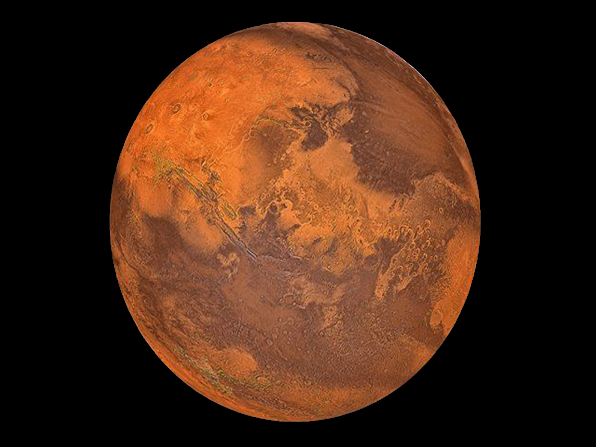
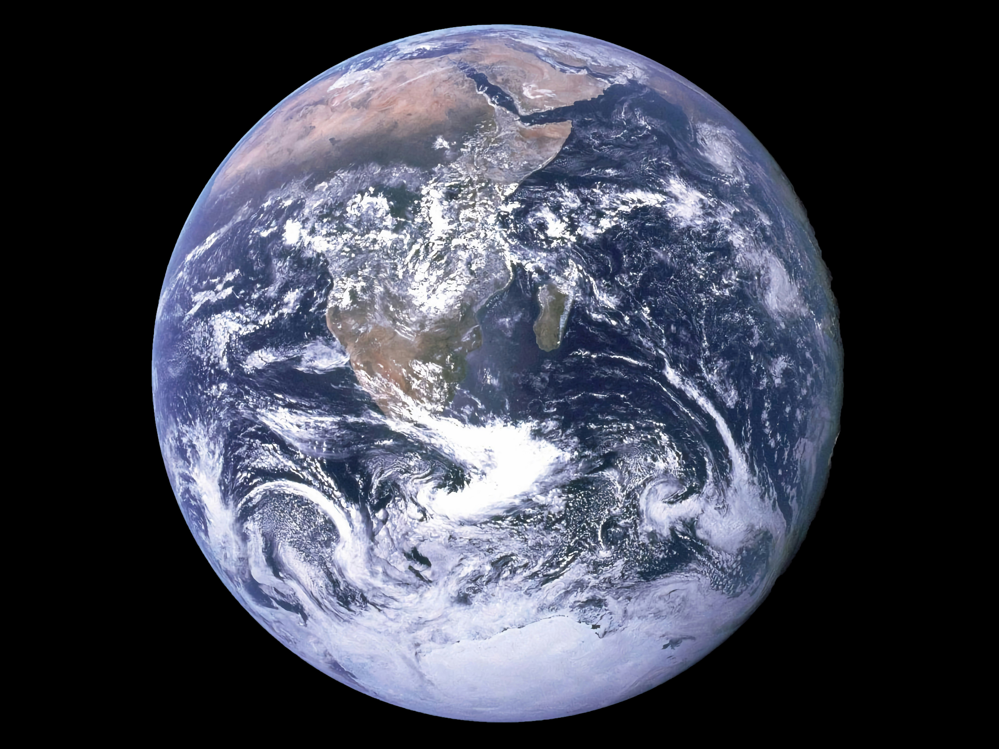
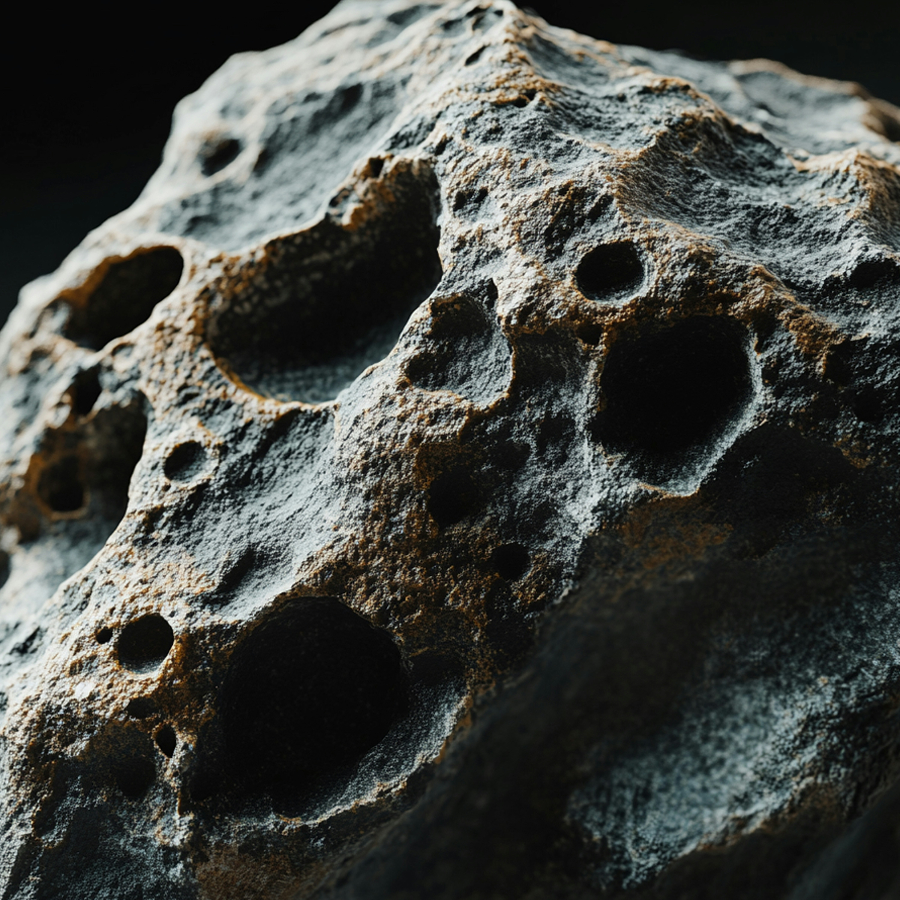
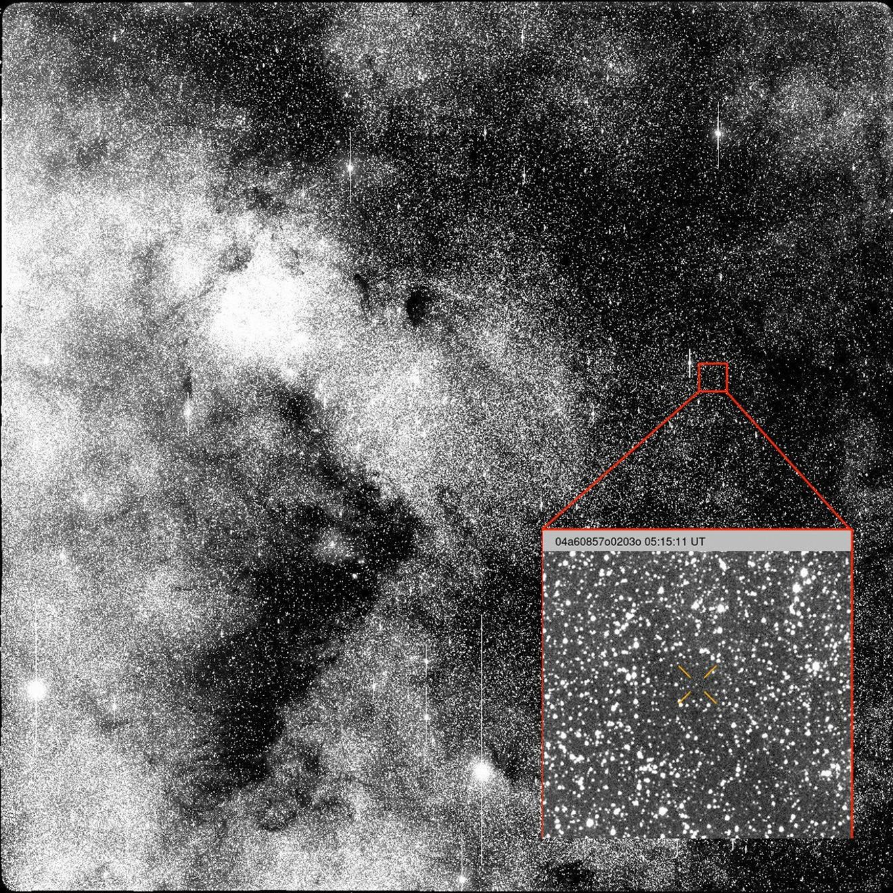

¡Bienvenidos a mi blog!
ÚLTIMAS ENTRADAS
Misión a Marte: Próximos pasos
La próxima misión tripulada a Marte está programada para el año 2030. Descubre los últimos avances en la preparación de esta histórica expedición.

La tierra. Que posibilidades de cambiar hay?
Recientemente, la NASA ha confirmado nuevas estrategias para proteger nuestro planeta. Conoce los proyectos innovadores que están revolucionando la sostenibilidad ambiental.

MÁS CONTENIDO
Exploración espacial
Descubre los últimos avances en la exploración del espacio profundo...

Cometas y asteroides
Estudia los cuerpos celestes que surcan nuestro sistema solar...

Satélites artificiales
Conoce cómo los satélites revolucionan la tecnología moderna...

El futuro de la NASA
Perspectivas y misiones planeadas para los próximos años...